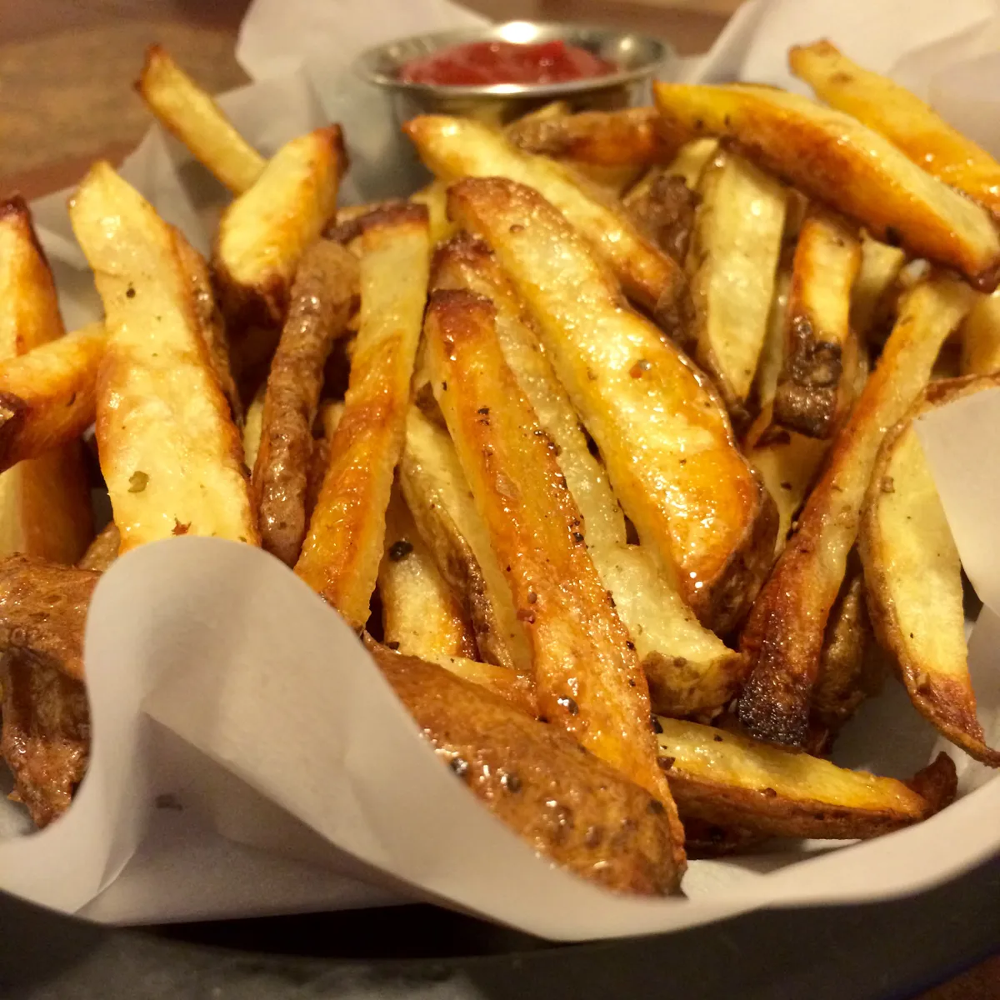

Crispy Fries

Description
Learn the secret to making the best homemade French fries from russet potatoes right at home!
These are easy to make ahead of time and fry or bake in the oven for a quick snack or side dish idea!
Want to know the secret on how to make French fries super crispy? Starch and Moisture Removal.
- How do you remove starch from potatoes? - Soak them in cold water.
- How do you remove moisture from potatoes? - Cook them twice.
Ingredients
- As many russet potatoes as you like
- S&P
- 1/2 cup of Vegetable Oil
Steps
- Soak the the fries in cold water for at least 1 hour or overnight and pat completely dry.
- Toss with up to 1/2 cup vegetable oil and sprinkle with salt and pepper.
- Place the fries in a single layer on a baking sheet at 400° F in the lower-third of the oven for 15-20 minutes.
- Remove, toss, place in a single layer, and bake for 10 more minutes or until brown and crispy.